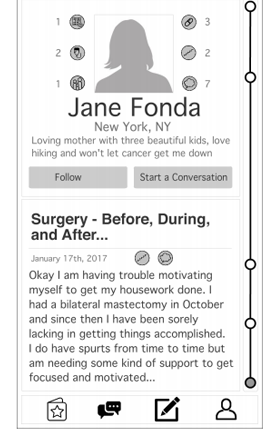
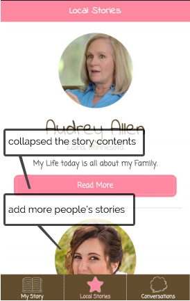

▮Introduction
When I look down at my chest, I sometimes get depressed. My boobs are gone. I liked my boobs. They nursed my children, they pleased my husband, they made me feel feminine ... they were a part of my identity.
Quote from the post "Flat and Fabulous: Life after breast cancer and a double mastectomy"
HerStory is a web application where breast cancer patients write chapters recording their thoughts and feelings during their battles with breast cancer. Users receive new chapters from other patients who are in similar situations to read, and conversations are encouraged between the author and the reader.
▮Needfinding Insights
From our previous research on hospital patients, we concluded that our product will be most useful for surgeries that are planned ahead of time and require treatments afterward. Once we decided to make a web application for breast cancer patients, we investigated a forum of breast cancer patients and gained several insights:
"I found a couple of older threads about Arimidex, but they covered a large time span with a gazillion posts, so I thought I would start a new thread for Arimidex users."
From the post "For Arimidex users, new, past and ongoing"
"I'm 4 weeks out from my last AC and any positive encouragement (and "you are almost there" posts) would really make this week wonderful."
From the post "Chemotherapy - Before, during and after"
"I would love to take over a hotel, make noise, laugh, cry, be flat together - to see you. I want to meet other women who, like me, have decided not to reconstruct."
From the post "I look for other flat chested women"
After identifying that our target users prefer real-time communication, supportive words and real-person meetups, we moved on to brainstorming solutions for them.
The first time I saw this photo, I grew strong desire to help mastectomy patients in this project.
▮Product Ideas
Based on our understanding of the patients' needs, we proposed several product ideas that might improve their situations.
Everyday Blessing
Every day when you pick and send a blessing sentence, another breast cancer patient somewhere in the world will receive it. You might get a chat request from her. Every app user might receive hundreds of blessings from each other every day.
Legend of Rumina
Doctors keep some diary books on the walls around the office. In the books women who've been through what you are going through write down their thoughts and feelings. You can read them and get in touch with those who have left their contact information.
Online Event Rooms
This service allows for planned meetups to occur. These meetups happen in chat rooms. Meetups can also include special guests to have (Reddit) AMA style, back and forth conversations with one another.
Party House
We hold a party in different cities every month. By decorating the place, passersby will clearly know that a breast cancer party is going on. Interested ones can join the party under the guidance of the staff at the entrance right away.
Mastectomy Pokemon
When you drive down the road, you will receive notifications of "recorded breast cancer experience" written by a person living nearby. You may mark and read later, or you can stop and visit her.
Travel Together!
You go to the travel agency, and ask whether there is any available special trip for breast cancer patients. If there is one, you can sign up for the trip, and enjoy the tour with other breast cancer patients.
We integrated our ideas into an app where users write posts chronicling their feelings during their journey through breast cancer. When a post is composed, it will be sent to selected users who share some similarities with the writer. Recipients can choose to either send a personalized "blessing" or initiate a conversation.
▮UI Ideas for This App
We sketched several thumbnails of UI ideas for this app.
App starts with a split main view, which puts equal emphasis on the concept of "giving out" and "taking in".
App starts with a 2/3 composing area and 1/3 featured story view. This design tends to encourage users to write a story in non-text form.
This design is inspired by Gmail. There is "schedule conversation" and "status" in the sketch because people can be too busy to start a real-time conversation.
▮ Sketch Wireframes
We picked the three best thumbnails in the group, and turned them into wireframes.
Wireframe 1: Equal Split
Wireframe 2: Write a Story
Wireframe 3: Mail Exchange
▮ User Testing
We first made a marvel prototype based on an integrated design. Participants are given three tasks:

Task 1: Navigate to four views from the bottom navigation bar.
Task 2: Read today's story, then write a message to the author
Task 3: Compose a new chapter for your story.
We tested our first prototype with a former breast cancer patient who is currently working with breast cancer patients on a daily basis. Based on her feedback, as well as feedback from instructors and peers in class, we made a second marvel prototype for further testing. Below is the flow diagram for our second marvel prototype.
▮ Expert Research
It is impossible to keep a yellow pages for the whole US breast cancer community.
We also conducted expert research with the founder of the Lump to Laughter website, Connie Hall, who walked us through the what many women are looking for as they battle breast cancer. She has been working with other breast cancer patients in North Carolina for many years. Among all the insights she provided us, there were three important ideas that guided our design revisions:
Support Not Logistics
Most breast cancer patients need support from community more than logistical information on surgeries.
A Purposeful Connection
A "purposeful" connection in the app is more meaningful than a random one. Even better if they can meet with each other.
Open When Choose to Talk
Breast cancer patients don't feel the need for confidentiality when they want to talk about their experience.
▮Design Mood
Meanwhile, I started with the aesthetic design of the UI. I picked three keywords: simple, classic, and flowery, to create a set of font and color themes that reflected the mood conveyed by each keyword. After discussion we decided to build our UI design based on the third theme.
▮Design Iteration
In the last stage of the project, we reached out to all available sources for feedback on HerStory, and accordingly made changes to the UI based on their input. The feedback pool can be divided into seven groups, and here I demonstrate our design iteration process with one example feature: Featured Story.
Version 1
At first, our "featured story" view looked like this. Users receive one selected featured story each day. The featured story view mainly contained three parts: the author's personal information, the chapters of the story, and the action buttons.
Version 2
On receiving the feedback saying "Why is there only one featured story (of the day)", we realized that users want more stories to explore. Thus we collapsed the content of the stories into the button "read more" and put more featured stories in this view.
Version 3

We then received a feedback complaining about the space usage of the local/featured stories page. We therefore adopted the cards and grid layout to reduce the white space so that the local stories view can more efficiently present information.
▮ Supplemental Materials
▮ Acknowledgments
Julie Stanford
Section Instructor
Jofish Kaye
Section Instructor
Ludwig Schubert
Course Assistant
Michael Bernstein
Course Instructor
Dhruv Joshi
Teammate
Luke Wilson
Teammate
Connie Hill
The founder of Lump to Laughter
Gitta Salomon
Consultant